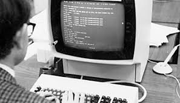

Industri 3.0
Revolusi Industri 3.0 terjadi pada awal abad ke-20 (1970-an) dan dipicu oleh perkembangan mesin-mesin pintar (Komputer & Software) berbasis teknologi otomasi yang perlahan menggantikan peran manusia di lapangan.
Digitalisasi dimulai khususnya di dunia industri, di mana penggunaan komputer mulai menggantikan tugas-tugas yang sebelumnya dilakukan oleh manusia.